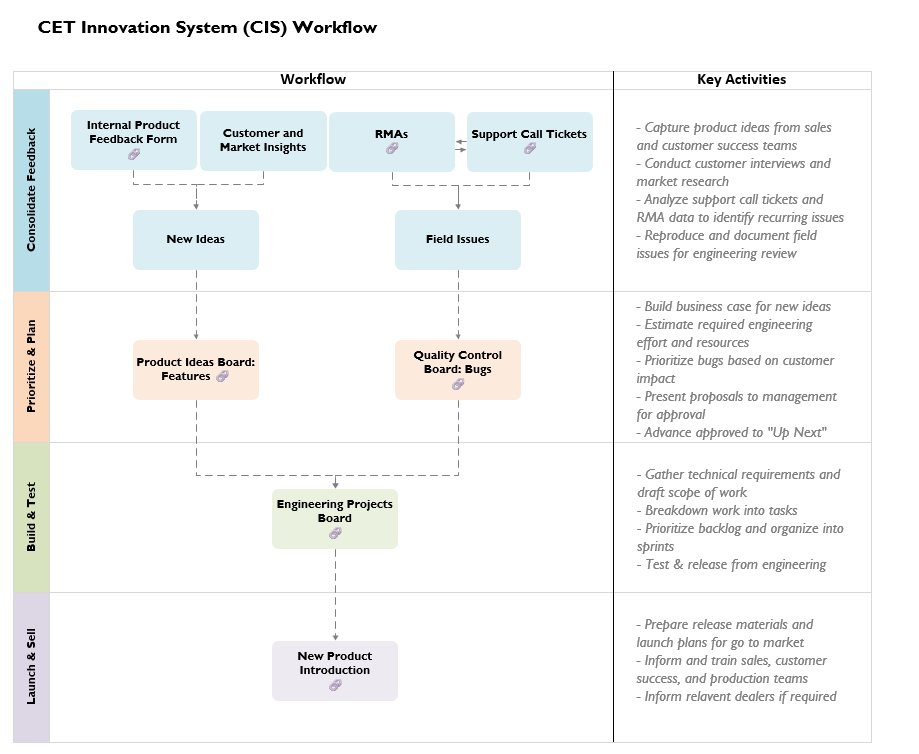
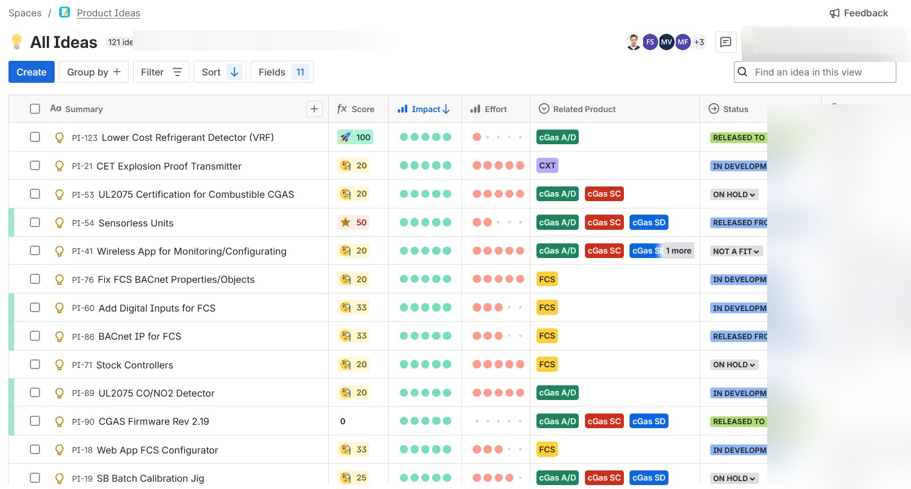
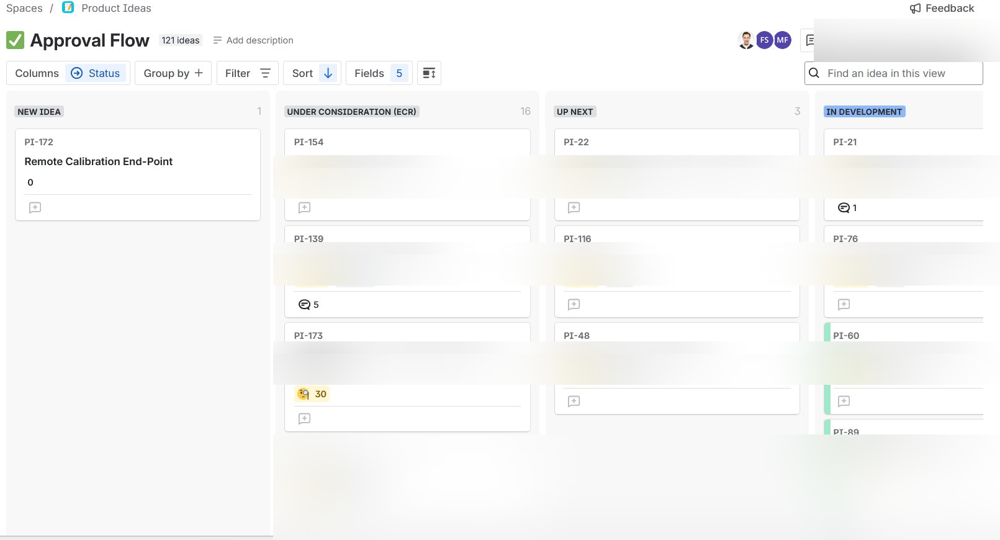
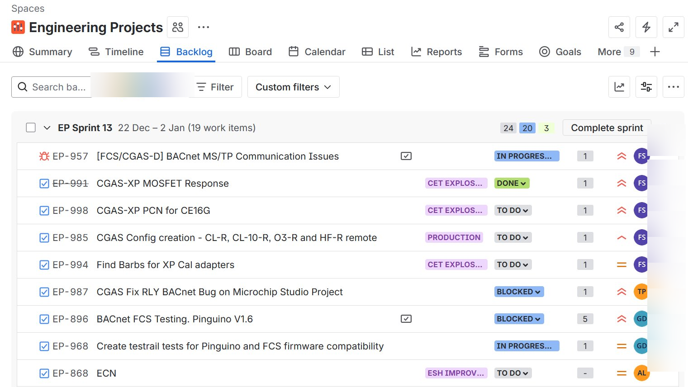
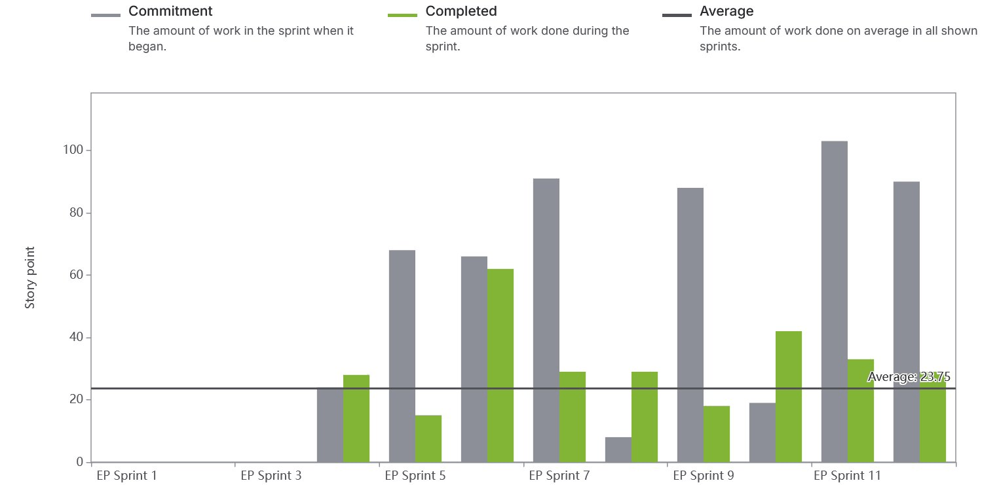
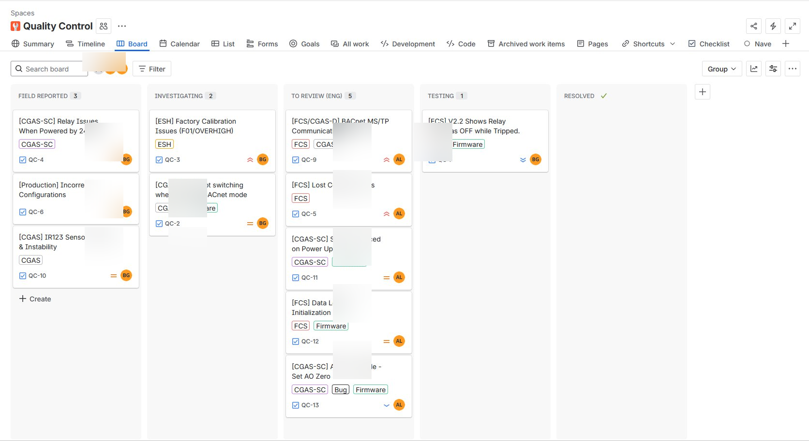
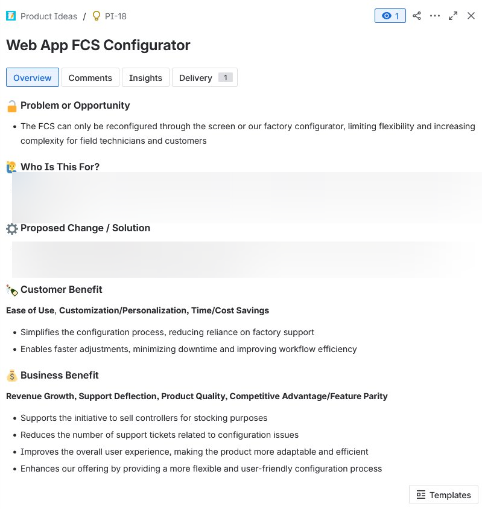
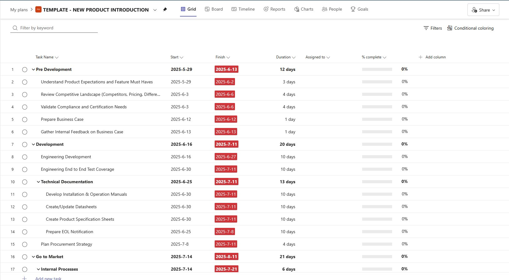
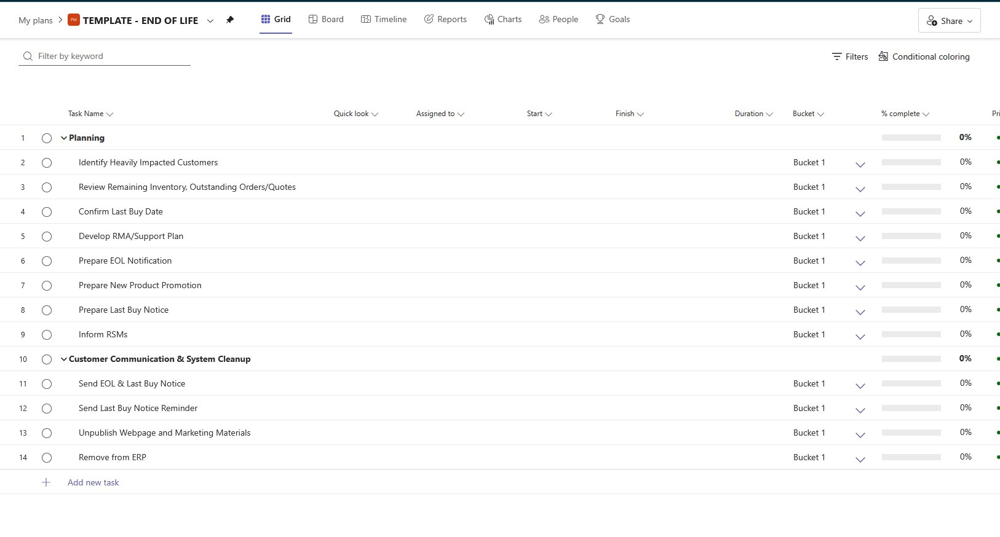

Process Design · Zero-to-OneAgile · Sprint ManagementCross-Functional Leadership
Product Innovation & Delivery System
The company had no product process — no prioritization, no sprint cadence, no way to trace a customer complaint to a shipped fix. I built the entire operating system from scratch, and engineering throughput improved measurably within the first year.
~19%Engineering throughput gain over 17 sprints
130+Ideas prioritized across 5 product lines
ZeroExisting process when I started
Sole PMDesigned, built, and operates the system
The Problem
Product ideas arrived through support calls, emails, and hallway conversations. There was no intake, no scoring, no owner. Engineering worked reactively — whatever was loudest got built next. Features shipped with no traceability back to customer need, and no way to measure whether delivery was improving.
As the company scaled, the dysfunction compounded: planning was divorced from capacity, context-switching was constant, and cross-functional teams had no shared view of what was being built or why.
What I Built
A full product operating system — designed from scratch, configured in Jira, and socialized across engineering, sales, and leadership:
Centralized intake — a single Product Ideas board pulling from a submission form, RMA data, support tickets, and direct field observation. One place. No more scattered inboxes.
Objective scoring — impact vs. effort framework, visible to all stakeholders. Every idea has a score, an owner, and a status. Prioritization became a conversation, not a negotiation.
Lifecycle governance — a written SOP covering every stage from NEW IDEA to RELEASED TO MARKET, with defined approval gates and role responsibilities. The system runs without me.
Sprint integration — approved ideas flow directly into bi-weekly engineering sprints with story point estimation and KPI tracking. First time the team had a shared cadence.

End-to-end workflow — from customer signal to shipped outcome
The System

Product Ideas board — 121 ideas scored, staged, and owned

Approval flow — ideas progressing from consideration to active development

Sprint backlog — engineering projects board

Velocity chart — throughput trend across 17 sprints

Quality Control board — field issues tracked to resolution

Structured feedback intake template

NPI template — new product introduction checklist

EOL checklist — end-of-life process ensuring clean product transitions
Results
Engineering throughput improved ~19% over 17 consecutive sprints. Features shipped through this system have driven measurable revenue impact. The process now runs independently — adopted by engineering, sales, and leadership without ongoing PM intervention.
First structured product process in company history — zero to fully operational
130+ ideas and 40+ bugs prioritized across 5 product lines
SOP documented and in use — onboards new team members without PM involvement
Cross-functional alignment improved — product, engineering, support, and leadership now share a single view of priorities